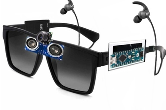

An all-in-one wearable AI solution for the visually impaired. Utilizing Raspberry Pi and YOLOv8 for real-time guidance, object detection, and emergency response.
3D PROJECT VISUALIZATION

Our prototype is specifically customized to assist blind persons in their daily navigation. The device identifies obstacles and narrates the environment via high-quality audio, ensuring safety and confidence for visually impaired users.
Real-time identification of people, cars, and obstacles with instant English audio feedback.
Extracts and reads English text from books, signs, and labels using high-precision Tesseract OCR.
Includes Voice Commands to Start and Stop the detection engine to optimize battery life.
More than just a tool, it's a personal assistant.
Users can command the glasses to "Play Music" or "Tell a Joke" via the integrated voice recognition system, reducing social isolation.
Simple voice prompts like "Stop Detection" or "Read Text" allow for a hands-free experience for the blind user.
MPU6050 sensor detects falls. If a fall is confirmed, an on-board buzzer sounds to alert people nearby.
Sends the user's live GPS coordinates via SMS to registered caretakers automatically during emergencies.
Ahtsham Ali
Hardware Engineer
Meesam Bilal
Software & AI Developer
M. Khalil Ullah
Documentation Specialist & Hardware Engineer
Project Guided and Supervised By
UIIT | PMAS-Arid Agriculture University Rawalpindi